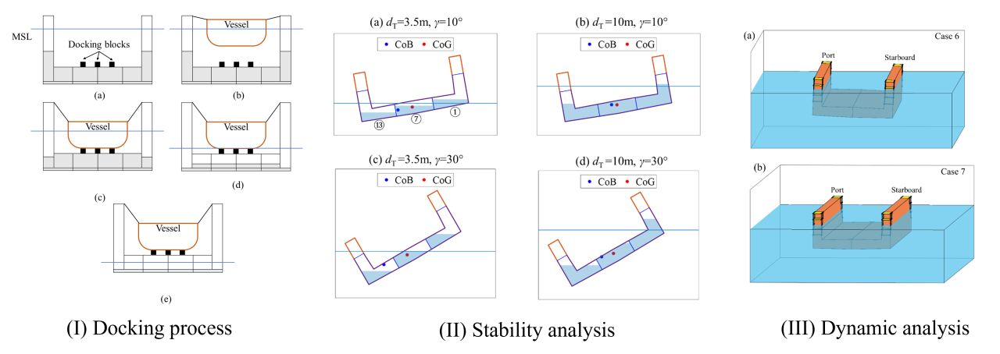

A numerical model for stability and dynamic analyses of a floating dock during operations

Abstract
This study aims to develop a numerical model for stability and dynamic analyses of a floating dock during operations. The floating dock is modeled as a six-degree-of-freedom rigid body subjected to hydrostatic, hydrodynamic, and mooring loads. The hydrostatic forces, including the dock's buoyancy and the ballast water's gravitational forces, are calculated using Archimedes’ law and strip theory. The hydrodynamic forces are estimated by considering the dock's added mass and dynamic damping. The mooring forces are determined using a catenary equation. A hydraulic model is proposed to calculate the ballast water flow rates during floating dock operations. A ballast water distribution strategy is presented and the effect of the vent pipes is studied. Using these numerical models, the dock's intact stability and the gravitational ballasting process are investigated. Results show that the proposed ballast water distribution strategy can help the dock achieve desired target draughts with zero heel and trim, and the vent pipe design can ensure a desired maximum draught. The metacentric heights and righting arms of the dock with different ballast water distributions are calculated through the intact stability analysis. Simulations are performed to study the dynamic processes of gravitational ballasting during maintenance operations. Overall, the proposed numerical model has practical applications in the floating dock's design, maintenance, and operations.
Read the published article ↗